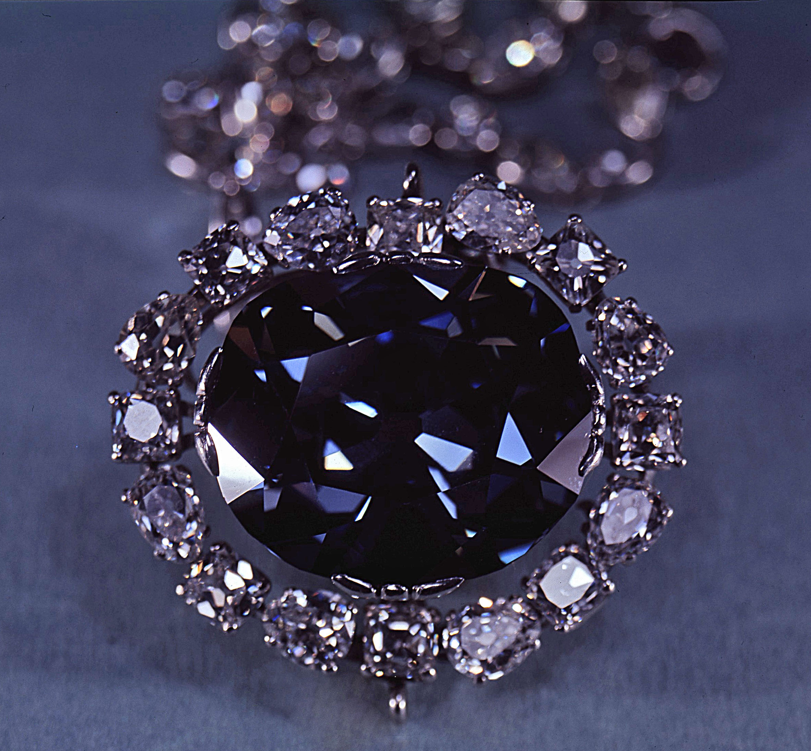
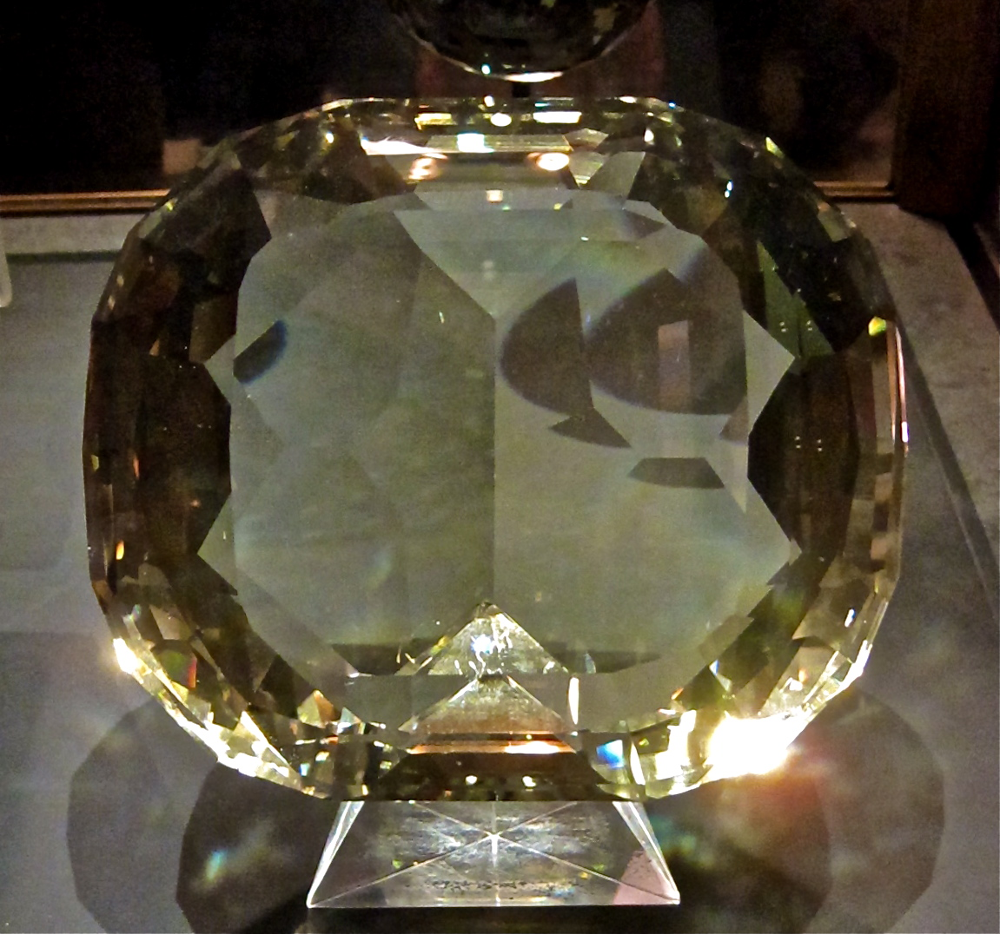
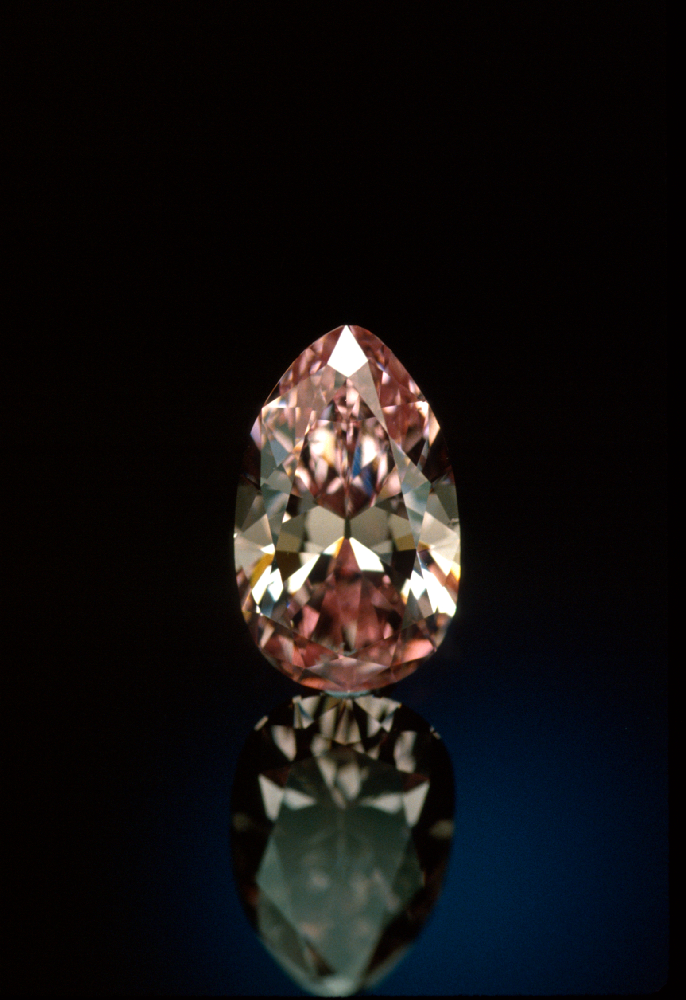

Hover over any circle to see more information about a specific gem on the
map
Click on any color to look specifically at where the gems in that color originate.
Use the dropdown to look specifically at the gems in the collection from a speciic country.
Explore by Color
The Smithsonian boasts one of the largest - and most colorful - gem collections
in the world. Here, we explore all of the different shades and hues within the collection.
Hover over any color to see the breakdown of the total carats of all of the
gems
in the
Smithsonian’s collection, and the types of gems in that color.
Click on any color to see an additional breakdown of color variations within that specific
color.
Use the dropdown to look specifically at a certain type of gemstone.
Notable Gems in the Collection
The Smithsonian’s collection is home to some of the most famous and valuable gems in the world. Here, we
explore some of the most notable pieces in the collection.
Scroll to see some highlights, and learn more about their backstories.



Gems at the Smithsonian
With nearly 10,000 gems from nearly 100 countries, the Smithsonian has one
of the
largest collections in the world. Let's take a closer look at their collection.
Types of Gems in the Collection
While the Smithsonian has a diverse collection of gems, Agate - a type of
quartz - is the most common type of gem in the Smithsonian's collection, with
921 pieces.
Gems are commonly featured in jewelry, so it's no surprise that the
Smithsonian's collection boasts a wide variety of impressive pieces. Let's take a look at the
types of jewelry in the collection.
Jewelry Pieces in the Collection
Of the 542 recorded pieces of jewelry in the collection, nearly a
third are necklaces, including many notable pieces like a necklace belonging to Napoleon
Bonaparte's wife, the famous Hope Diamond, and the Kimberley Diamond,
pictured below. Read more about these gems in the Notable Gems section.